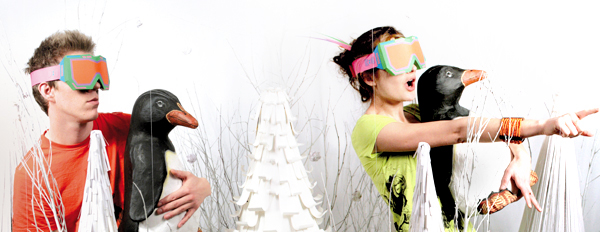

Zim&Zou are two french artists, based in Nancy. The duo is composed of Lucie THOMAS, born in the Vosges in 1987, and Thibault ZIMMERMANN, born in Paris in 1986. They studied graphic design during three years. They decided to focus on installations using handcrafted objects made out of tangible materials such as paper, wood, thread, etc...rolling away from computer design.
Anchored in craftsmanship, they create all the elements composing their installations by hand, from drawing to cutting and assembling. Their favorite material is the paper they're cutting, folding and gluing to give rise to intricate and colorful sculptures. Paper inspires them for its versatility, infinite range of colors and unique textures. The flat sheets turned into volume are giving an installation the poetry of ephemeral material. Zim&Zou's strength is to be a complementary and polyvalent duo.